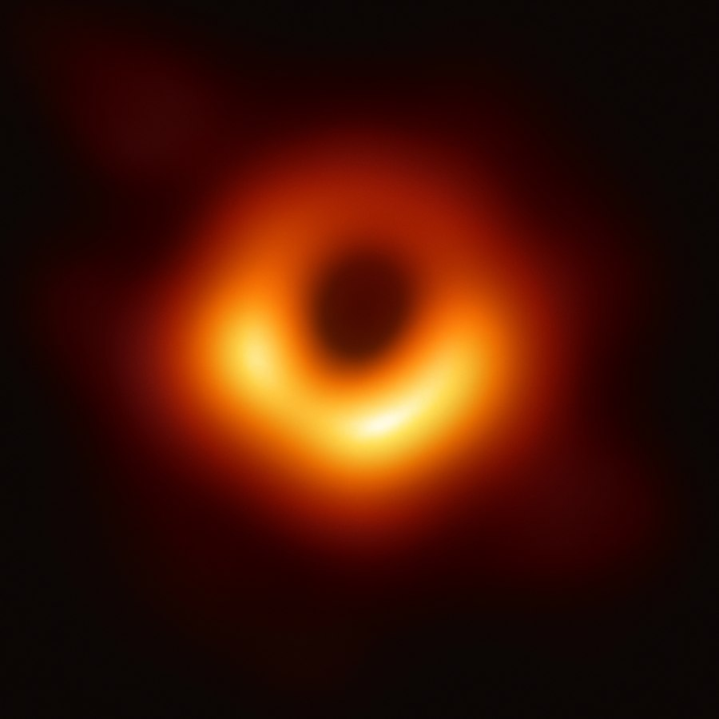
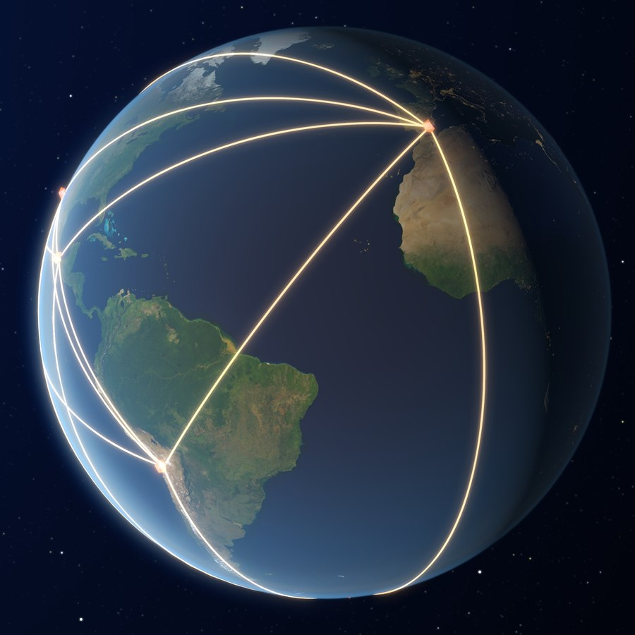

La operación matemática que descompone cualquier señal en sus frecuencias: desde la imagen de un agujero negro hasta el MP3 que escuchás, todo pasa por Fourier
Escuchás una nota de piano. Lo que llega a tu oído es una perturbación de presión en el aire: una función del tiempo, una curva que sube y baja millones de veces por segundo. Esa curva no es simple: contiene la frecuencia fundamental de la nota más todos sus armónicos, más el ruido de sala, más el sonido del pedal. Todo mezclado en una sola señal temporal aparentemente caótica. La Transformada de Fourier es la operación matemática que toma esa mezcla y la descompone en sus ingredientes frecuenciales puros, diciéndote exactamente cuánto hay de cada frecuencia. Es el equivalente matemático de pasar luz blanca por un prisma: la señal compleja se descompone en su espectro.
Joseph Fourier presentó en 1807 ante el Instituto de París una memoria sobre la propagación del calor en la que proponía representar funciones como sumas infinitas de senos y cosenos; la publicó recién en 1822, en su Théorie analytique de la chaleur. La idea encontró resistencia: Lagrange y Laplace objetaron esos desarrollos en series trigonométricas, y aunque el trabajo ganó el premio del Instituto de 1811, el informe le reprochó falta de generalidad y de rigor. Pero Fourier tenía razón, y el resultado que lleva su nombre se convirtió en uno de los instrumentos matemáticos más poderosos y ubicuos de la ciencia y la tecnología modernas: está en cada imagen JPEG, cada llamada telefónica, cada resonancia magnética, cada telescopio de radio y cada detector de ondas gravitacionales.
La Serie de Fourier aplica a funciones periódicas: cualquier señal que se repite con período \( T \) puede escribirse como suma de senos y cosenos de frecuencias \( f_0 = 1/T, 2f_0, 3f_0, \ldots \) La Transformada de Fourier generaliza este resultado a funciones no periódicas (señales de duración finita, pulsos, señales arbitrarias) tomando el límite \( T \to \infty \): el espectro discreto de la serie se convierte en un espectro continuo de frecuencias.
El filtro de batido: Imaginá que tenés un batido de fresa y banana mezclados. La Transformada de Fourier es un filtro químico que puede separar el batido y decirte exactamente cuántos gramos de fresa y cuántos de banana hay, sin importar cuán mezclados estén. No te dice cuándo entraron a la licuadora (eso es el dominio del tiempo), sino cuánto hay de cada ingrediente (eso es el dominio de la frecuencia). En física, "los ingredientes" son las frecuencias puras que componen la señal.
La transformada inversa permite reconstruir la señal original a partir de su espectro:
La Transformada de Fourier tiene propiedades algebraicas que la hacen especialmente poderosa para resolver ecuaciones. La más importante para la física es que convierte la convolución en el dominio del tiempo en una multiplicación en el dominio de la frecuencia, y viceversa. Esto transforma ecuaciones diferenciales (difíciles) en ecuaciones algebraicas (simples).
La primera imagen de un agujero negro: En 2019, el Event Horizon Telescope publicó la primera imagen del agujero negro M87*, a 55 millones de años-luz. No fue fotografiada con una cámara convencional: ocho radiotelescopios distribuidos por todo el planeta recogieron ondas de radio durante días. Cada telescopio recibió una señal temporal (función del tiempo). La imagen se reconstruyó a partir de la función de visibilidad (las correlaciones entre pares de telescopios), que corresponde al espectro espacial de frecuencias de la imagen. Como la red mide solo algunas de esas frecuencias espaciales, no alcanza con invertir la transformada: cuatro equipos, sin ver el trabajo de los otros, reconstruyeron la imagen con métodos distintos, como CLEAN y la máxima verosimilitud regularizada, y obtuvieron el mismo anillo. Sin la Transformada de Fourier, esa imagen no existiría: sería solo terabytes de datos de radio sin sentido aparente.


La Transformada de Fourier continua requiere una integral, pero las señales digitales son discretas: secuencias de números muestreados a intervalos regulares. La Transformada Discreta de Fourier (DFT) es la versión para señales digitales. Calculada directamente, la DFT de \( N \) puntos requiere \( O(N^2) \) operaciones. En 1965, Cooley y Tukey publicaron el algoritmo de la Transformada Rápida de Fourier (FFT), que reduce el costo a \( O(N \log N) \): para \( N = 10^6 \), la diferencia es entre \( 10^{12} \) y \( 2\times10^7 \) operaciones — cinco órdenes de magnitud. La FFT es uno de los algoritmos más importantes de la historia de la computación.
El Principio de Incertidumbre de Heisenberg en mecánica cuántica — \( \Delta x \cdot \Delta p \geq \hbar/2 \) — es en realidad una consecuencia matemática de la Transformada de Fourier aplicada a funciones de onda. En el formalismo cuántico, la función de onda en el espacio de posiciones \( \psi(x) \) y en el espacio de momentos \( \phi(p) \) son Transformadas de Fourier una de la otra. Esto implica que una función muy localizada en posición (\( \Delta x \) pequeño) tiene una transformada de Fourier muy extendida en momento (\( \Delta p \) grande), y viceversa. La incertidumbre cuántica no es solo una limitación experimental: es una propiedad matemática de los pares Fourier, presente en cualquier onda, sea cuántica o clásica.
La Transformada de Fourier es el puente entre el dominio del tiempo y el dominio de la frecuencia: dos representaciones equivalentes de la misma realidad física. Que exista ese puente — que cualquier señal pueda descomponerse en frecuencias puras y reconstruirse exactamente — no es obvio: es un teorema profundo cuya demostración rigurosa requirió un siglo de matemática después de que Fourier lo propusiera. Hoy opera silenciosamente en cada compresión de audio, cada imagen médica, cada comunicación inalámbrica y cada telescopio que mira al universo. Es una de las ideas más democráticas de la matemática: una herramienta de precisión astronómica accesible a cualquiera que entienda la integral.
Pregunta para la comunidad: La Transformada de Fourier descompone cualquier señal en frecuencias puras. El Principio de Incertidumbre de Heisenberg emerge directamente de esa matemática. ¿Eso significa que la incertidumbre cuántica es una propiedad matemática de las ondas en general, no una propiedad especial de la materia cuántica? ¿Existe un "principio de incertidumbre" análogo para el sonido o para las ondas de radio?